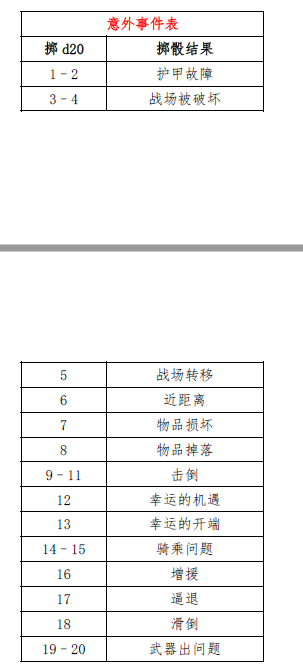

意外事件
意外事件
各种各样的事会发生在战争的迷雾之中。许多战斗的成败都取决于一个幸运的机遇或是难以预料的复杂情况。在玩家可选战斗规则系统中，意外事件检定反映了这一点。
意外事件为混战增添了色彩和刺激。它们创造了可以让才思敏捷的玩家们加以利用的机遇或机会。它们还能让DM 呈现出更生动和直观的战斗中的角色形象。
DM 可以自由决定意外事件是否发生，甚至可以改变它以反映在战斗中的实际情况。譬如说，战斗发生在一个覆满积雪的山坡上，DM
就可以决定意外事件是因为战斗引发的雪崩。
一般来说，尽管玩家或生物可以通过豁免检定或属性检定避免伤害，但是意外事件不应该对他们造成直接的伤害。使用意外事件在战场上制造混乱和骚乱，但不要偏袒任何一方。

护甲故障
随机一个战斗人员的护甲出现故障，掷1d6
以确定具体的故障。这个角色可以亡羊补牢，花上一轮时间站着不动来修理他的护甲。
掷d6
投掷结果
1–2 头盔掉落，受害者的头部暴露
3–5
盾牌掉落
6 金属板掉落，AC+2（仅限板甲）
战场被破坏
战场内或周围的东西会被破坏。如果是在室内战斗，则可能是一件家具，一扇窗户或是一桶啤酒。
战场转移
战场的潮流推动所有单位往随机方向移动至距离原位置1d6
格远的地方。没有人可以借机攻击。
近距离
两个互相威胁的敌人发现他们相互之间已经处于对方的触及范围内，并且实际上已经扭打在了一起。
物品损坏
一个随机的战斗人员在受到粗鲁地挥砍的伤害后。选择对除武器和卷轴外的任何物品，然后进行豁免检定，看看它是否被破坏。
物品掉落
如上所述，但那个物品只是洒出、落下或是从其主人身上砍掉。
击倒
一个处于混战中的随机战斗人员与他附近的人碰撞而被击倒在地。离他最近的棋子（朋友或敌人）必须通过对抗麻痹的豁免检定，否则将会紧接着倒下在他的身边。
幸运的机遇
一个随机的战斗人员会受到命运的青睐，其防御等级和豁免检定只在这一轮获得+4
的奖励。
幸运的开端
一个随机的战斗人员看到了他的机会。在这一轮中，他对他计划攻击的任何敌人的攻击检定得到+4的奖励。
骑乘问题
一个随机的骑乘中的战斗人员和他的动物陷入了困境。掷1d6：
掷d6
掷骰结果
1–3
坐骑逃跑。它往随机方向冲刺1d10
轮，除非骑手通过一次成功的骑乘检定。
4–5
坐骑站立。骑手必须通过一个成功的骑术检定，否则会从坐骑上摔下来。
6
坐骑摔倒。被抛出的骑手必须通过对抗麻痹的豁免检定，否则晕倒1d6 轮。
增援
DM 选择属于一方或另一方的盟友出现。
逼退
无论属于哪一方，被威胁的棋子都被迫使后退。见下文的“逼退”。
滑倒
一个随机的战斗人员滑倒在地，他要花一整轮的时间才可以爬起来。
武器出问题
一个随机的战斗人员使用武器的时候遇到了麻烦。投掷d6。
掷d6
掷骰结果
1–2
战斗人员的武器被解除，除非通过对抗麻痹的豁免检定。
3-5
硬碰硬地招架可能会损坏武器。为物品进行对抗碾压的豁免检定来避免其发生。
6 如果角色在上一轮杀死了对手，他的武器就会卡在敌人身上。需要一轮把它给拉出来。